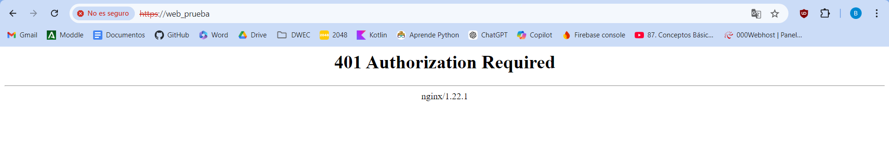
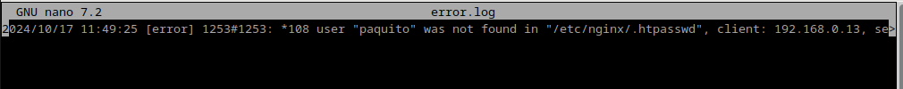
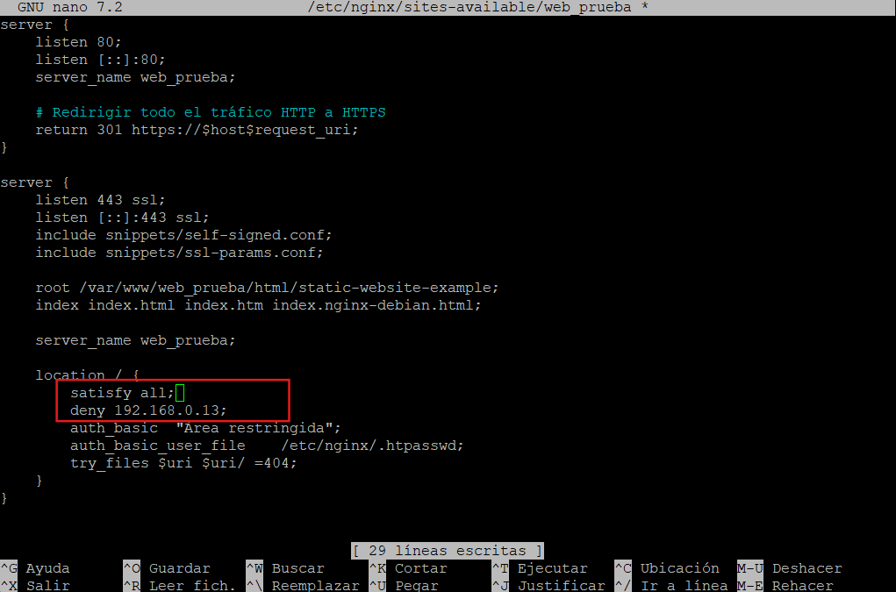
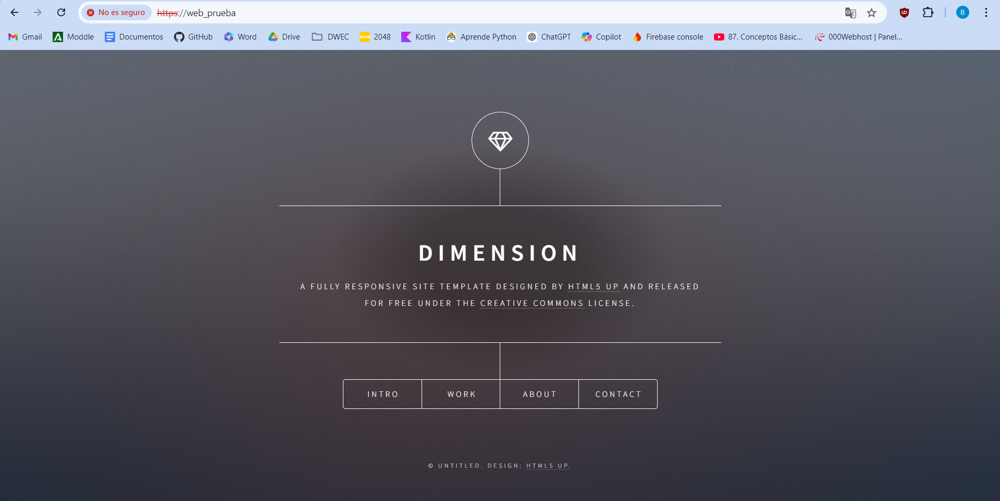
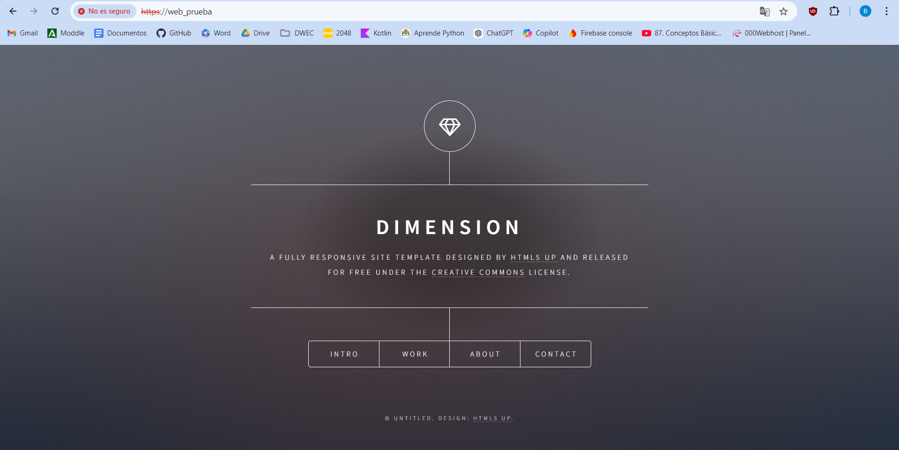

Práctica 2.2 – Autenticación en Nginx
Paquetes necesarios
Para esta práctica podemos utilizar la herramienta openssl para crear las contraseñas.
En primer lugar debemos comprobar si el paquete está instalado:
dpkg -l | grep openssl
Y si no lo estuviera, instalarlo.
Creación de usuarios y contraseñas para el acceso web
Creamos un archivo oculto llamado “.htpasswd” en el directorio de configuración /etc/nginx donde guardar nuestros usuarios y contraseñas:
sudo sh -c "echo -n 'vuestro_nombre:' >> /etc/nginx/.htpasswd"
Ahora crearemos un pasword cifrado para el usuario:
sudo sh -c "openssl passwd -apr1 >> /etc/nginx/.htpasswd"
Este proceso se podrá repetir para tantos usuarios como haga falta.
Crea dos usuarios, uno con tu nombre y otro con tu primer apellido Comprueba que el usuario y la contraseña aparecen cifrados en el fichero:
cat /etc/nginx/.htpasswd
Configurando el servidor Nginx para usar autenticación básica
Editaremos la configuración del server block sobre el cual queremos aplicar la restricción de acceso.
sudo nano /etc/nginx/sites-available/nombre_web
Utilizaremos la directiva auth_basic dentro del location y le pondremos el nombre a nuestro dominio que será mostrado al usuario al solicitar las credenciales. Por último, configuramos Nginx para que utilice el fichero que previamente hemos creado con la directiva auth_basic_user_file:

Una vez terminada la configuración, reiniciamos el servicio.
sudo systemctl restart nginx
Comprobación 1
Comprueba desde tu máquina física/anfitrión que puedes acceder a http://nombre-sitio-web y que se te solicita autenticación

Comprobación 2
Comprueba que si decides cancelar la autenticación, se te negará el acceso al sitio con un error. ¿Qué error es?

Tarea 1
Intenta entrar primero con un usuario erróneo y luego con otro correcto. Puedes ver todos los sucesos y registros en los logs access.log y error.log
Adjunta una captura de pantalla de los logs donde se vea que intentas entrar primero con un usuario inválido y con otro válido. Indica dónde podemos ver los errores de usuario inválido o no encontrado, así como donde podemos ver el número de error que os aparecía antes
Usuario inválido:
access.log error.log: 
Usuario válido:
access.log
 error.log:
No hay error ya que el usuario es válido.
error.log:
No hay error ya que el usuario es válido.
Tarea 2
Borra las dos líneas que hacen referencia a la autenticación básica en el location del directorio raíz. Tras ello, añade un nuevo location debajo con la autenticación básica para el archivo/sección contact.html únicamente.

Combinación de la autenticación básica con la restricción de acceso por IP
Tarea 1
Configura Nginx para que no deje acceder con la IP de la máquina anfitriona al directorio raíz de una de tus dos webs. Modifica su server block o archivo de configuración. Comprueba como se deniega el acceso:

Al intentar acceder nos encontramos con error

error.log:

Tarea 2
Configura Nginx para que desde tu máquina anfitriona se tenga que tener tanto una IP válida como un usuario válido, ambas cosas a la vez, y comprueba que sí puede acceder sin problemas
 


Cuestión 1
Supongamos que yo soy el cliente con la IP 172.1.10.15 e intento acceder al directorio web_muy_guay de mi sitio web, equivocándome al poner el usuario y contraseña. ¿Podré acceder?¿Por qué?
location /web_muy_guay {
#...
satisfy all;
deny 172.1.10.6;
allow 172.1.10.15;
allow 172.1.3.14;
deny all;
auth_basic "Cuestión final 1";
auth_basic_user_file conf/htpasswd;
}
No, porque aunque la ip sea admitida, debe satisfacer todos los métodos de autentificación como indica el satisfy all
Cuestión 2
ask "Cuestión 1" Supongamos que yo soy el cliente con la IP 172.1.10.15 e intento acceder al directorio web_muy_guay de mi sitio web, introduciendo correctamente usuari y contraseña. ¿Podré acceder?¿Por qué?
location /web_muy_guay {
#...
satisfy all;
deny all;
deny 172.1.10.6;
allow 172.1.10.15;
allow 172.1.3.14;
auth_basic "Cuestión final 2: The revenge";
auth_basic_user_file conf/htpasswd;
}
En este caso, aunque introduzcamos correctamente el usuario y contraseña, al estar deny all al principio del todo deniega el acceso a todas las ips. Por lo que no podríamos acceder.
Cuestión 3
Supongamos que yo soy el cliente con la IP 172.1.10.15 e intento acceder al directorio web_muy_guay de mi sitio web, introduciendo correctamente usuario y contraseña. ¿Podré acceder?¿Por qué?
location /web_muy_guay {
#...
satisfy any;
deny 172.1.10.6;
deny 172.1.10.15;
allow 172.1.3.14;
auth_basic "Cuestión final 3: The final combat";
auth_basic_user_file conf/htpasswd;
}
No, porque nuestra ip está denegada.
Cuestión 4
A lo mejor no sabéis que tengo una web para documentar todas mis excursiones espaciales con Jeff, es esta: Jeff Bezos y yo
Supongamos que quiero restringir el acceso al directorio de proyectos porque es muy secreto, eso quiere decir añadir autenticación básica a la URL:Proyectos
Completa la configuración para conseguirlo:
server {
listen 80;
listen [::]:80;
root /var/www/freewebsitetemplates.com/preview/space-science;
index index.html index.htm index.nginx-debian.html;
server_name freewebsitetemplates.com www.freewebsitetemplates.com;
location /Proyectos{
auth_basic "Cuestión final 4";
auth_basic_user_file conf/htpasswd;
try_files $uri $uri/ =404;
}
}